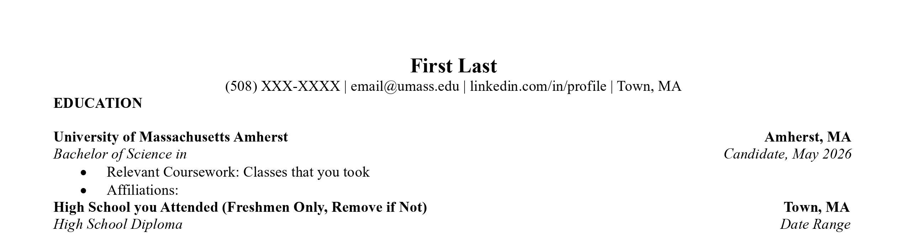
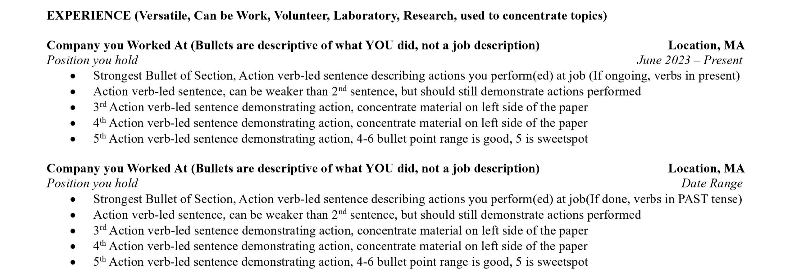
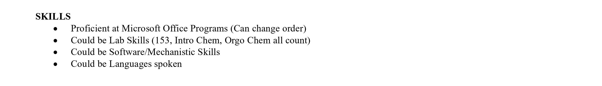

@umassburc
@umassburc
Resources
These are some of the resources we would like to provide that can be helpful in the future. Be it while reaching out and applying to labs, searching for jobs in the future, your Summer Internship hunt, BURC has got you covered!
Resumés
- Concise
- Properly Formatted
- Visually Appealing
- A Representation of Who You Are
Styling
Header

Education Section
Experience Section Headers

Individual Experiences

Skills Section
Links
Ready to Get Started?
Join B.U.R.C. today and start exploring research opportunities, connecting with faculty and peers, and developing the skills you need to succeed in your academic and professional careers. Please sign our Interest Form on the link below.